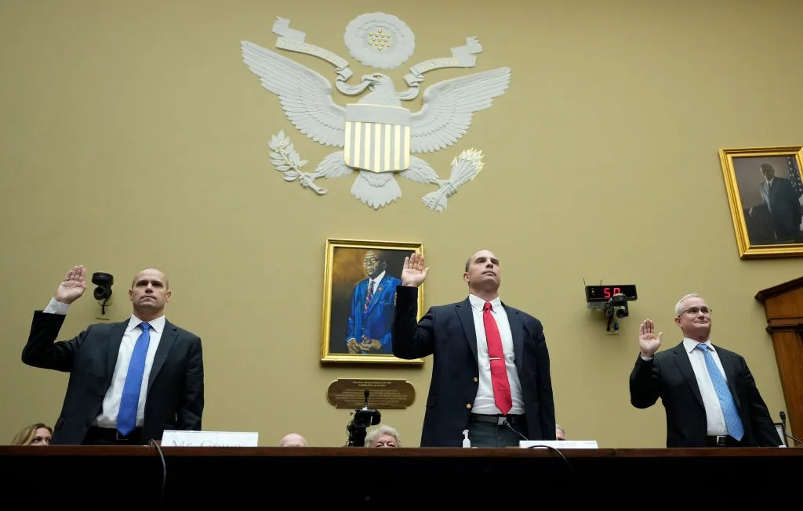
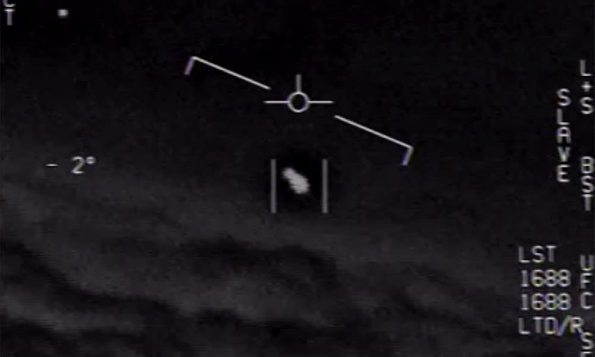

Hay momentos en que una sola persona mueve la aguja de un debate que llevaba décadas paralizado. En el mundo de los UAP —Fenómenos Anómalos No Identificados— ese momento fue el 5 de junio de 2023, cuando The Debrief publicó las primeras declaraciones de un exoficial de inteligencia llamado David Charles Grusch. Lo que vino después —audiencias en el Congreso, legislación bipartidista, desclasificaciones históricas, conferencias de prensa en el Capitolio— tiene su origen en ese artículo. Este es el relato completo, desde el principio hasta hoy.

// Perfil · Fuente principal
David Charles Grusch
Mayor (Ret.) · Fuerza Aérea EE.UU. · Oficial Senior de Inteligencia
- Servicio: 14 años en la Fuerza Aérea de los EE.UU. Combate en Afganistán con JSOC e ISAF.
- Agencias: Agencia Nacional de Inteligencia Geoespacial (NGA) · Oficina de Reconocimiento Nacional (NRO)
- Rol UAP: Representante oficial de la NRO ante el UAP Task Force del Pentágono (2019–2021)
- Denuncia: Queja formal de whistleblower ante el Inspector General de la IC (ICIG) en 2022. Calificada como "creíble y urgente".
- Hoy: Asesor Especial del congresista Eric Burlison en el Task Force de Desclasificación de Secretos Federales (desde marzo 2025)
Acto I — La denuncia silenciosa (2021–2022)
Antes de que el mundo supiera su nombre, Grusch llevaba años acumulando lo que describe como un cuerpo de evidencia obtenido de otros funcionarios: fotografías, documentos oficiales y testimonios orales clasificados. En 2021, siendo todavía empleado activo de la NGA, comenzó a reportar sus inquietudes internamente. Sus superiores, según él mismo declaró posteriormente, no le dieron ninguna importancia.
En 2022 decidió actuar por canales formales. Presentó una queja de denunciante —un "PP-19 Urgent Concern filing"— ante el Inspector General de la Comunidad de Inteligencia (ICIG). El ICIG revisó la queja y la calificó como "creíble y urgente", lo que en términos legales obligaba a su reporte ante los comités de inteligencia del Congreso. Era la primera vez que el sistema institucional reconocía formalmente que algo en las afirmaciones de Grusch merecía atención. Pero el proceso siguió siendo invisible para el público.
// Evaluación oficial · Inspector General ICIG · 2022
La queja de whistleblower presentada por David Grusch fue calificada oficialmente como "creíble y urgente" por el Inspector General de la Comunidad de Inteligencia, lo que activó su reporte obligatorio ante los comités de inteligencia del Congreso.
Fuente: Declaración pública de Grusch · Audiencia ante el Comité de Supervisión de la Cámara · Julio 2023Acto II — La explosión pública (junio 2023)
El 5 de junio de 2023, los periodistas Leslie Kean y Ralph Blumenthal —ambos con historial de cobertura UAP en el New York Times— publicaron en The Debrief el artículo que cambiaría el debate. El título era directo: "Intelligence Officials Say U.S. Has Retrieved Craft of Non-Human Origin." Su fuente principal era Grusch, quien accedió a hablar bajo su nombre real, asumiendo el peso completo de lo que estaba afirmando.
Las afirmaciones eran de una magnitud sin precedentes en boca de alguien con sus credenciales. El gobierno federal de los Estados Unidos, decía Grusch, poseía un programa altamente secreto de recuperación de OVNIs con naves de origen no humano —algunas intactas, otras parcialmente dañadas— además de restos biológicos de pilotos fallecidos. Afirmaba también que existían "pruebas sustanciales de delitos de cuello blanco" para ocultar estos programas, y que personas habían sido eliminadas para garantizar su secreto.
"El gobierno de los Estados Unidos ha recuperado vehículos de origen no humano. Sé esto porque me lo dijeron personas con un historial de legitimidad y servicio, y que presentaron evidencia en forma de fotografías, documentación oficial y testimonios orales clasificados."
— David Grusch · Declaraciones iniciales a The Debrief · Junio 2023Un detalle crucial que Grusch subrayó desde el principio: él no afirmaba haber visto personalmente ninguna nave ni ningún cuerpo. Sus conclusiones se basaban en las entrevistas que realizó durante cuatro años con más de 40 funcionarios con acceso directo a los programas clasificados, en el marco de su rol oficial en el UAP Task Force.

Acto III — Bajo juramento en el Congreso (26 julio 2023)
Seis semanas después de las declaraciones en The Debrief, el Subcomité de Seguridad Nacional, Frontera y Asuntos Exteriores de la Cámara convocó la audiencia pública más importante sobre UAP en la historia del Congreso de los Estados Unidos. Grusch testificó junto a dos pilotos militares con experiencia directa: el ex piloto de la Marina Ryan Graves, y el Comandante David Fravor —el piloto del famoso incidente del "Tic Tac" frente a la costa de California en 2004.
Ante las cámaras y bajo juramento, Grusch reiteró sus afirmaciones y fue más lejos: declaró que el gobierno de los EE.UU. probablemente tiene conocimiento de actividad no humana desde la década de 1930. Afirmó que había recuperado "biologics no humanos" —restos biológicos de origen no humano— de sitios de recuperación de UAP. Cuando los legisladores le preguntaron por detalles específicos —nombres de programas, ubicaciones, individuos involucrados— respondió sistemáticamente que esa información solo podía compartirla en un SCIF, una sala segura con legisladores debidamente autorizados, sin audiencia pública.
// Puntos clave · Testimonio bajo juramento · 26 julio 2023
Lo que Grusch declaró ante el Congreso
Actividad no humana desde los 1930s: Afirmó que el gobierno de EE.UU. tiene conocimiento documentado de fenómenos no humanos desde hace casi un siglo.
"Biologics no humanos": Declaró que el gobierno recuperó restos biológicos de origen no humano en sitios de impacto de UAP.
Programas multi-década: Alegó la existencia de programas de recuperación y reingeniería inversa de materiales operativos fuera del control del Congreso.
Lista de testigos: Ofreció proveer al comité una lista de testigos "cooperativos y hostiles" dentro del gobierno para continuar la investigación.
Represalias: Confirmó haber sufrido "represalias muy brutales" por parte de sus superiores. No pudo dar detalles por la investigación en curso.
Límites del testimonio: En reiteradas ocasiones indicó que detalles específicos solo podían compartirse en sesión clasificada (SCIF).

La audiencia duró cuatro horas y fue transmitida en vivo. Congresistas de ambos partidos —desde Matt Gaetz hasta Jared Moskowitz— exigieron acceso a Grusch en sesión clasificada. El Representante Tim Burchett la resumió con franqueza: "Si lo que Grusch dice es cierto, es la noticia más grande de la historia de la humanidad." El presidente del Comité de Inteligencia, Mike Turner, se mostró escéptico pero no descartó la necesidad de investigar.
Rep. Tim Burchett (R-TN)
Comité de Supervisión · Cámara de Representantes · EE.UU.
"Si lo que este hombre dice es verdad, es la historia más grande que el mundo haya visto jamás. Y si no lo es, debemos saberlo también. De cualquier manera, el Congreso tiene la obligación de investigarlo."
Acto IV — Entre el 2023 y el 2025: el ecosistema legislativo
Las declaraciones de Grusch no quedaron en el vacío. En los meses siguientes, el Congreso incorporó lenguaje específico sobre UAP en varias versiones del National Defense Authorization Act (NDAA), el presupuesto anual de defensa. Se creó el AARO —All-domain Anomaly Resolution Office— como organismo oficial de investigación. Se establecieron mecanismos de protección para futuros whistleblowers militares.
En paralelo, Grusch continuó testificando en sesiones clasificadas. En noviembre de 2023 participó en otra audiencia cerrada. La comunidad de investigadores UAP mantuvo su perfil elevado mediante entrevistas con periodistas como Ross Coulthart y a través de podcasts y eventos públicos. Pero el gran salto —pasar del testimonio a la acción— todavía no había ocurrido.
// Línea de tiempo · David Grusch · 2019–2026
2019–2021
Representante de la NRO ante el UAP Task Force
Grusch actúa como enlace oficial entre la Oficina de Reconocimiento Nacional y el equipo del Pentágono encargado de investigar UAPs. Comienza a recopilar testimonios de más de 40 funcionarios con acceso directo a programas clasificados.
2021
Primeros reportes internos y represalias
Grusch reporta sus inquietudes a sus superiores, incluyendo al director del AARO, Dr. Sean Kirkpatrick. Según sus propias palabras, su denuncia "no le dio la más mínima importancia." Comienza a sufrir lo que describe como represalias profesionales.
2022 — Hito
Queja formal ante el ICIG: "Creíble y urgente"
Presenta un "PP-19 Urgent Concern" ante el Inspector General de la Comunidad de Inteligencia. El ICIG la califica de "creíble y urgente" —la primera validación institucional de sus afirmaciones— y la traslada a los comités de inteligencia del Congreso.
5 Junio 2023 — Hito
Explosión pública: The Debrief y NewsNation
Leslie Kean, Ralph Blumenthal y Ross Coulthart publican sus declaraciones. Por primera vez, un oficial con credenciales verificables afirma públicamente que EE.UU. posee naves y restos biológicos de origen no humano. La noticia sacude al mundo.
26 Julio 2023 — Hito
Testimonio histórico ante el Congreso de los EE.UU.
Testifica bajo juramento junto a los pilotos Ryan Graves y David Fravor ante el Subcomité de Seguridad Nacional de la Cámara. Cuatro horas de audiencia transmitida en vivo. Declara actividad no humana desde los años 30 y ofrece proveer una lista de testigos para el Congreso.
Nov. 2023
Sesión clasificada en el Congreso
Participa en una audiencia cerrada ante legisladores con habilitación de seguridad apropiada, donde puede compartir detalles que no pudo en la sesión pública. El contenido de esa sesión sigue clasificado.
Marzo 2025
Asesor oficial del Congreso
El congresista Eric Burlison (R-MO) lo incorpora a su equipo como Asesor Especial en UAP y transparencia gubernamental. Grusch pasa de testigo a actor legislativo dentro del Task Force de Desclasificación de Secretos Federales.
Noviembre 2025
Sobre Trump: "Está muy bien informado"
En declaración pública, Grusch aborda directamente el conocimiento del Presidente sobre el tema: "Él ciertamente está muy bien informado sobre este asunto. Lo dejaré así. No quiero adelantarme a lo que el Presidente podría querer revelar personalmente."
Abril 2026
"El universo está repleto de vida"
En declaración pública afirma que la divulgación "será un poco incómoda" y que hay "verdades que serán una píldora difícil de tragar". Describe "firmas anómalas en los cielos" que el gobierno reconoce como "inteligencia no humana y sintiente" y anticipa "una nueva era" para la humanidad.
9 Junio 2026 — Hito
Conferencia de prensa en las escalinatas del Capitolio
Junto a los congresistas Burchett, Luna, Burlison y Moskowitz, más las periodistas Leslie Kean y James Fox, convoca una conferencia de prensa pública exigiendo desclasificación inmediata. Revela la existencia de "slush funds" por miles de millones de dólares y pide que el Task Force de Fraude de JD Vance investigue. Acusa a la DIA de obstruir la supervisión del Congreso.
Acto V — El Capitolio, 9 de junio de 2026
El 9 de junio, a la una de la tarde, David Grusch volvió a los escalones del Capitolio. Esta vez no como testigo convocado sino como agente activo de un movimiento de desclasificación con respaldo bipartidista. A su lado estaban cuatro legisladores en funciones, dos de los periodistas más importantes de la cobertura UAP en el mundo, y documentalistas. El encuadre era deliberado: ya no se trata de pedir que crean; se trata de exigir que abran los archivos.
Las declaraciones más concretas de Grusch en esta aparición fueron también las más explosivas. Por primera vez habló públicamente de "slush funds" —fondos reservados que operan fuera de los canales normales de supervisión del Congreso— valorados en miles de millones de dólares anuales y destinados, según él, a financiar programas de recuperación de materiales UAP. Pidió explícitamente que el equipo de JD Vance, encargado de investigar el fraude y el derroche del gobierno, extienda su mandato a estos fondos. "Es un problema real de fraude, derroche y abuso", dijo ante los reporteros.
// Declaración directa · David Grusch · 9 Junio 2026 · Capitol Hill
"Es un problema real de fraude, derroche y abuso. Muchos del equipo del Presidente han sido mantenidos a oscuras por actores políticamente designados de alto ego. El Presidente Trump tiene ahora una oportunidad histórica. Esta conferencia de prensa es sobre pasar del testimonio a la acción."
Fuente: Washington Examiner / Fox News · Conferencia de prensa · Capitol Hill · 9 junio 2026Grusch también hizo una de sus afirmaciones más detalladas hasta la fecha sobre la naturaleza de la inteligencia no humana que alega conocer. Sin proveer evidencia en el acto, describió un "continuo" que va desde vida bípeda corpórea hasta lo que denominó "plasma sintiente", y afirmó que el gobierno tiene conocimiento de "varios" tipos dentro de ese espectro. Acusó específicamente a la Agencia de Inteligencia de Defensa (DIA) de obstruir las solicitudes legítimas de documentos por parte del Congreso.
Rep. Eric Burlison (R-MO)
Task Force de Desclasificación · Comité de Supervisión · Cámara de Representantes
"Esta es la era de la divulgación. Esconderse detrás de la clasificación ya no es aceptable. Este es el momento. Use la autoridad que tiene, Señor Presidente. El pueblo americano está de su lado. Y para todos los que trabajan en el gobierno, en contratistas, retirados en cualquier parte del mundo: vengan al Congreso. Esta es una llamada mundial a la acción sobre lo que saben."
Acto VI — El giro: de la nave al dinero (9–13 junio 2026)
Lo que ocurrió en los días posteriores a la conferencia de prensa del Capitolio es, en cierto sentido, más revelador que la conferencia misma. Grusch no repitió el libreto de 2023. En sus apariciones siguientes, incluida una entrevista en Fox News, dejó de centrar el debate en naves recuperadas o restos biológicos —los titulares que lo hicieron famoso— y empezó a hablar casi exclusivamente de estructura: quién audita esos programas, quién los financia y por qué ningún mecanismo de supervisión del Congreso ha logrado tocarlos en décadas.
Es un cambio de objetivo, no de historia. Grusch sostiene que el problema ya no es únicamente si el gobierno posee tecnología no humana, sino si una arquitectura de secreto ha crecido lo suficiente como para operar fuera del alcance de las auditorías, las solicitudes documentales y el control legislativo ordinario. En sus palabras a Fox News, dijo haber pagado un "precio severo" por convertirse en denunciante, pero insistió en que la discusión pública había entrado en una fase distinta: ya no se trata solo de qué sabe el gobierno, sino de quién controla la información y los recursos detrás de ella.
// Lo que cambió entre el 9 y el 13 de junio
De la especulación a lo auditable
Antes (2023–9 jun 2026): el eje era si existen programas de recuperación de tecnología no humana y qué saben sobre inteligencias no humanas.
Después (9–13 jun 2026): el eje pasa a quién controla esos programas y bajo qué mecanismos de supervisión —o ausencia de ellos— operan.
La diferencia importa porque la primera pregunta depende de creer o no en la palabra de testigos con acceso clasificado. La segunda es, en principio, verificable: auditorías, registros presupuestarios, documentación oficial.
Lo más notable de esta fase no son las palabras de Grusch, sino quién más empezó a usarlas. Por primera vez desde 2023, legisladores y otros denunciantes comenzaron a describir el asunto públicamente con un vocabulario distinto al de los OVNIs: fraude, despilfarro de recursos públicos, abuso de autoridad, ocultamiento de información al Congreso. Es el lenguaje habitual de la supervisión gubernamental, no el del fenómeno UAP, y trasladar el debate a ese terreno lo hace mucho más difícil de despachar como especulación.
"El acontecimiento de junio de 2026 no es que Grusch haya repetido lo que dice desde 2023. Es que movió el foco de la nave al presupuesto que la rodea —y eso se puede auditar aunque nunca se resuelva qué hay dentro del hangar."
— Análisis editorial · Mundo MaravillosoSi esta línea de investigación avanza, podría convertirse en la primera vía capaz de producir evidencia verificable de forma independiente al debate sobre el origen del fenómeno. Las preguntas sobre presupuestos ocultos y acceso restringido no dependen de que alguien decida creer en testigos anónimos: dependen de que alguien con autoridad de auditoría decida mirar. Esa es, en buena medida, la apuesta de Grusch para esta nueva fase: trasladar la carga de la prueba del testimonio a la contabilidad.
Acto VII — Las fotografías (14–15 junio 2026)
El giro hacia el dinero y la supervisión no duró ni una semana sin verse interrumpido por el tipo de afirmación que originalmente puso a Grusch en el mapa. El 14 de junio, en una entrevista en The Big Weekend Show, volvió a hablar de lo físico: dijo haber visto fotografías de vehículos recuperados, describió distintas formas observadas en ese material, y repitió la expectativa de que vendrán nuevas divulgaciones oficiales.
Al día siguiente, el equipo del congresista Eric Burlison —el mismo legislador que había estado a su lado en las escalinatas del Capitolio días antes— redistribuyó y comentó públicamente la entrevista, subrayando en particular dos puntos: que Grusch afirmó haber visto esas fotografías de naves recuperadas, y que anticipa más divulgaciones por parte del gobierno.
El movimiento es revelador del ritmo que ha tomado este episodio. Grusch no abandonó el terreno de la supervisión financiera que dominó la primera mitad de junio; lo intercaló con una reafirmación de lo que siempre ha sido el núcleo de su caso: que existe material visual y físico que el gobierno no ha mostrado. Que la oficina de un congresista en funciones decida amplificar esa afirmación específica, en lugar de limitarse al ángulo del fraude presupuestario, sugiere que ambos hilos —el dinero y la nave— siguen entrelazados en la estrategia pública de Grusch, incluso cuando los titulares se concentran en uno solo a la vez.
¿Qué tan creíbles son sus afirmaciones?
Esta es la pregunta que divide al campo. No existe, hasta hoy, ningún documento o evidencia física públicamente disponible que confirme las afirmaciones centrales de Grusch. La totalidad de su caso descansa en testimonios de terceros que él recabó, y que por su naturaleza clasificada no pueden ser verificados públicamente. Esto, en periodismo, es un límite fundamental.
Dicho esto, hay elementos que le dan peso a su posición: sus credenciales son reales y verificables; su queja fue calificada como "creíble y urgente" por el ICIG, que no es un organismo de aficionados; testificó bajo juramento, lo que implica consecuencias legales en caso de perjurio; y el Congreso le ha dado acceso a sesiones clasificadas, lo que sugiere que al menos algunos legisladores con acceso a información privilegiada consideran que hay algo que investigar.
Lo que respalda su credibilidad
- Credenciales verificadas: 14 años de servicio, acceso de alto nivel clasificado real
- ICIG calificó su queja como "creíble y urgente" en 2022
- Testificó bajo juramento ante el Congreso — consecuencias legales en caso de perjurio
- Respaldo bipartidista de legisladores con acceso a información clasificada
- Más de 40 fuentes con acceso directo, según su propio relato
Lo que los escépticos señalan
- Cero evidencia física o documental verificable en dominio público
- Sus afirmaciones se basan en lo que otros le dijeron —no en observación directa
- El AARO (Pentágono) declaró no tener evidencia de origen extraterrestre en ningún UAP
- La clasificación hace imposible la verificación independiente
- Historial de afirmaciones que escalan sin correspondiente divulgación
Lo que puede decirse con certeza
- Es el whistleblower UAP con las credenciales más altas en hablar públicamente
- El Congreso lo toma lo suficientemente en serio como para darle acceso legislativo formal
- Sus declaraciones aceleraron la desclasificación más amplia de la historia UAP en EE.UU.
- El debate ya no es si el fenómeno existe, sino qué es exactamente
- Está dispuesto a asumir consecuencias legales por sus afirmaciones — y lo ha hecho
// Intensidad pública del caso Grusch · 2023–2026
// Intensidad estimada basada en cobertura mediática, actividad legislativa y declaraciones públicas documentadas · Mundo Maravilloso
Por qué importa, independientemente de la verdad
Hay algo que el caso Grusch ha logrado con independencia de si sus afirmaciones centrales son ciertas o no: ha movido el umbral de lo que es aceptable discutir en público. El Congreso de los Estados Unidos celebra ahora audiencias sobre recuperación de naves de origen no humano con la misma normalidad con que antes lo hacía sobre el presupuesto de defensa convencional. El Pentágono tiene un organismo oficial dedicado a UAPs. El gobierno desclasifica archivos bajo presión legislativa.
Eso no ocurrió en el vacío. Grusch fue el catalizador. Su disposición a asumir el riesgo —profesional, legal, personal— de poner su nombre en afirmaciones extraordinarias cambió el cálculo político. Si hubiera dicho lo mismo de forma anónima, la audiencia del 26 de julio de 2023 probablemente no habría ocurrido. Si no hubiera testificado bajo juramento, los congresistas no habrían podido justificar su presión al Pentágono.
"Lo que Grusch ha hecho, independientemente de si sus afirmaciones son verdaderas, es convertir un debate de márgenes en un debate de centro. Eso, en décadas de negación institucional, es en sí mismo extraordinario."
— Análisis editorial · Mundo MaravillosoEl 9 de junio, en las escalinatas del Capitolio, Grusch no parecía el hombre que busca ser creído. Parecía el hombre que busca ser escuchado por quienes tienen el poder de actuar. La diferencia es importante. Lleva tres años diciendo que tiene una lista. Ese día pidió que alguien finalmente la use. Días después, en TV y a través de aliados en el Congreso, mostró que no piensa dejar que la pregunta se enfríe.
// Preguntas que siguen abiertas
- ¿Qué hay exactamente en la lista de testigos "cooperativos y hostiles" que Grusch ofreció al Congreso en 2023? ¿Alguien la ha seguido?
- ¿Investigará el Task Force de JD Vance los "slush funds" que Grusch denunció el 9 de junio? ¿O quedará en declaración política?
- ¿Qué registros específicos ha identificado Grusch ante organismos de supervisión que todavía no han sido desclasificados?
- La DIA, acusada directamente de obstruir al Congreso: ¿responderá públicamente a las acusaciones?
- Grusch afirma haber visto fotografías de naves recuperadas: ¿se publicará alguna vez ese material, o queda en testimonio sin evidencia exhibida?
- ¿Qué ocurrió en la sesión clasificada de noviembre de 2023? ¿Qué legisladores tienen acceso a esa información?
- Y la pregunta de fondo, siempre: ¿qué es lo que no se ha publicado todavía?
// Comentarios